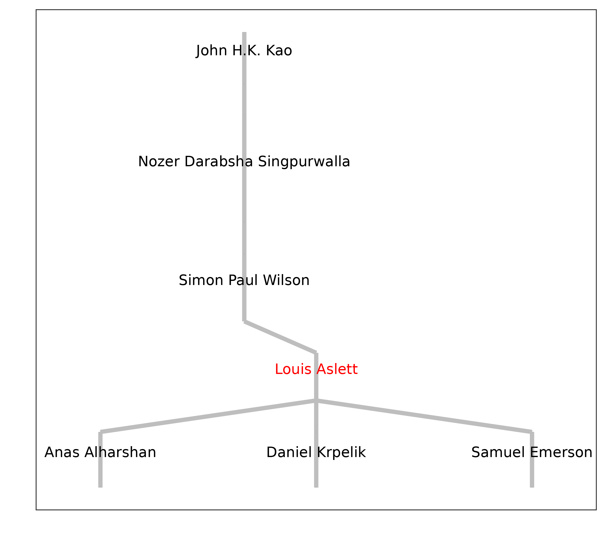
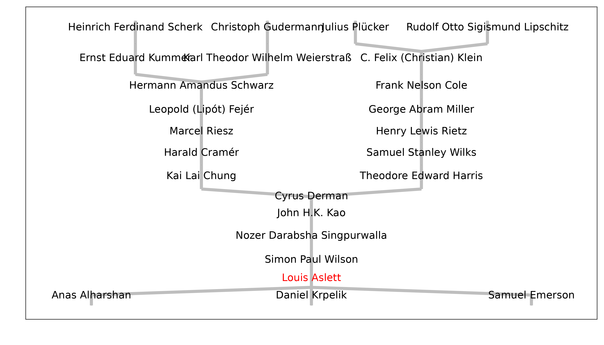
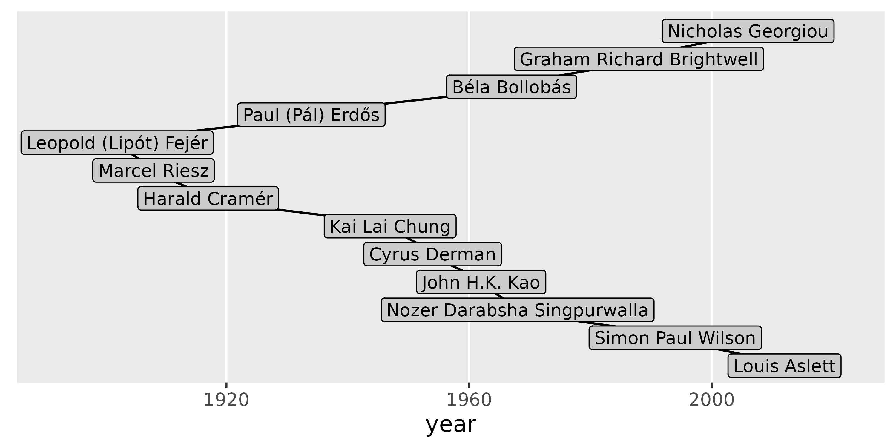
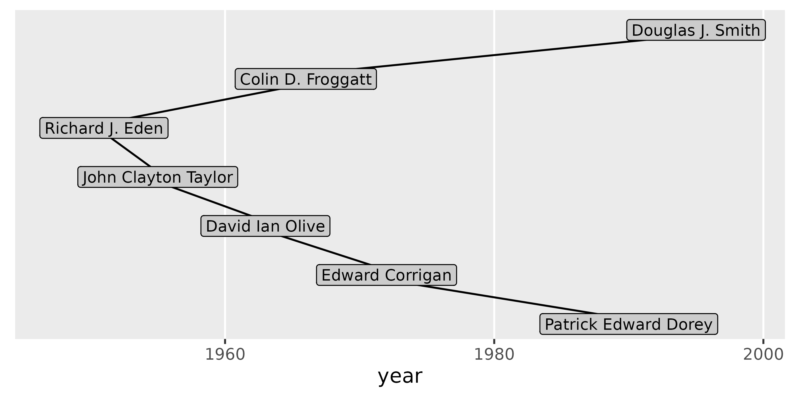
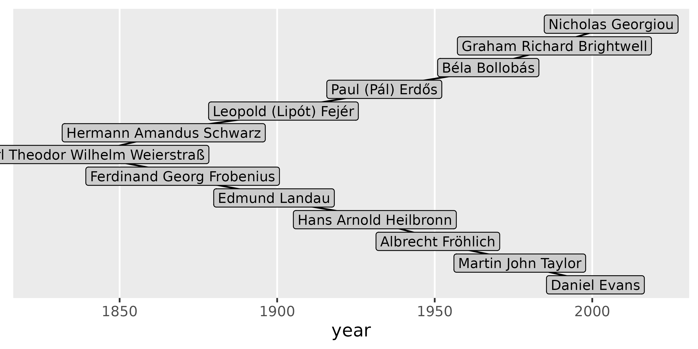
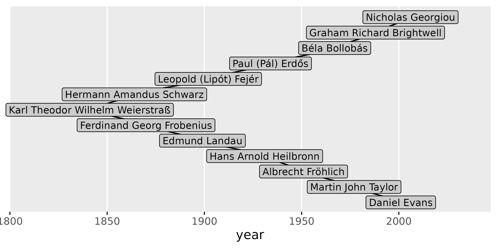

Getting Started
L.J.M. Aslett, Durham University
Source:vignettes/getting-started.Rmd
getting-started.RmdThe Mathematics Genealogy Project (MGP), available at https://mathgenealogy.org/, is an online platform dedicated to compiling the academic ancestry of mathematicians. Its mission is to create a comprehensive resource that tracks the intellectual lineage of individuals in the field of mathematics (broadly interpreted) by collecting and organising information about their PhD degrees, advisors, and students. The project provides access to this genealogical data through their website, enabling researchers and enthusiasts to explore the connections and relationships within the mathematics community. The MGP plays a vital role in preserving the history and development of the discipline. We owe a debt of gratitude to Dr Harry Coonce, who founded the project in 1997 (Jackson, 2007), following which the database has steadily grown to reach well over 300,000 entries by late 2024.
This package is designed to enable downloading and plotting the genealogical tree data from the MGP in R, expanding on the functionality that is available through the website.
Getting started
We begin, as always, by loading the package:
To utilise the main data-related functions within the package —
specifically, search_id() and get_genealogy()
— an active internet connection is required.
Every mathematician listed in the Mathematics Genealogy Project (MGP)
is assigned a unique ID. The first task is to locate the ID for the
mathematician(s) you wish to investigate. There are at least two methods
to accomplish this. The first option is to visit the MGP website’s
search page at https://www.mathgenealogy.org/search.php and complete
the search fields. After locating the desired mathematician and
navigating to their data page, you will notice that the URL in your
browser’s address bar follows the format
https://www.mathgenealogy.org/id.php?id=171971, where the
numbers at the end represent the ID (in this instance, 171971 is the ID
for the author of this package).
Alternatively, this package offers a second option that allows you to
remain within your R session. By using the function
search_id(), you can specify the same search parameters and
obtain a data frame summarising the results, including the essential ID
for subsequent steps. Below is the output from a search using the family
name of the author of this package:
search_id("aslett")
#> id name university year
#> 1 171971 Aslett, Louis Trinity College, Dublin 2012
#> 2 164179 Haslett, John
#> 3 164818 Haslett, Stephen Victoria University of Wellington 1986
#> 4 57304 Laslett, Geofrey Australian National University 1975As can be seen, the search performs partial matches and is case insensitive.
If needed, some simple regular expression constructs are also supported. For instance, if you happened to know the author’s family name but only that their first initial is “L”, you can narrow down the search by requiring a full match of the family name and a match on the first letter of the given name:
search_id("^aslett$", "^l")
#> id name university year
#> 1 171971 Aslett, Louis Trinity College, Dublin 2012You will likely be able to find the required mathematician without using regular expressions, but if you would like a beginner’s tutorial on how to use them, refer to Chapter 15 of R for Data Science (Wickham et al., 2023).
Fetching genealogical data
With the ID 171971 from the search, you can now retrieve
the author’s genealogical tree:
g <- get_genealogy(171971)
#> ✔ Connecting to geneagrapher-core WebSocket server [541ms]
#> ✔ Sending query [20ms]
#> ✔ 🎓 Full genealogy retrieved [1.5s] When passing only the ID, the function searches the entire tree both
“upwards”, fetching all ancestors, as well as “downwards”, fetching all
descendants. Note that for mathematicians in modern times, there can be
a considerable number of ancestors, and for historical mathematicians,
the descendant trees may be even larger. For these reasons,
get_genealogy() allows you to disable these functions by
using the arguments ancestors and descendants
and passing FALSE.
Plotting the genealogical tree
There are currently two ways to plot the genealogical tree. The first
uses Graphviz (Ellson et al., 2004) via the DiagrammeR
package (Iannone and Roy, 2024), while the second employs the
ggenealogy package (Rutter et al., 2019). Neither of these
packages is specified as a hard dependency, but you will be prompted to
install them if you attempt to use the relevant plotting function
without the requisite packages.
Graphviz typically produces the best full-tree view and can be
generated using plot_grviz(). Continuing with the previous
example, this can be accomplished by:
plot_grviz(g)If you are viewing this vignette in a browser, you can zoom in and out using your mouse scroll wheel or trackpad. Alternatively, you can zoom in by double-clicking and zoom out by holding the shift key while double-clicking. You can pan around by dragging the plot.
To render this to a PDF file instead of viewing it interactively, simply provide a file name as the second argument:
plot_grviz(g, "aslett-tree.pdf")As an alternative, ggenealogy is excellent for plotting
‘local’ genealogy, showing a limited number of ancestral/descendant
generations, as follows:
plot_gg(g)
You can also control the number of ancestral and descendant
generations displayed using max_anc and
max_des:
plot_gg(g, max_anc = 11)
Care will need to be taken with the sizing of the plot to ensure it is readable: unlike the Graphviz output this relies on R’s plot scaling.
More than one mathematician
Note that the genealogical tree can be built using more than one
mathematician’s ID when calling get_genealogy(). This will
result in each ID being used as a starting point from which to traverse
the tree through ancestors and descendants. The genealogical tree can be
constructed using multiple mathematicians’ IDs when calling
get_genealogy(). This will use each ID as a starting point
for traversing the tree through ancestors and descendants, including all
results in a single genealogical tree.
The inspiration for this package arose from a discussion over drinks between the package author and some colleagues at Durham University. This is as good a way as any to select the next example, which plots the joint genealogical tree built by using those present as starting IDs!
g <- get_genealogy(c(171971, 108465, 175763, 191788, 169213))
#> ✔ Connecting to geneagrapher-core WebSocket server [558ms]
#> ✔ Sending query [33ms]
#> ✔ 🎓 Full genealogy retrieved [8.5s]Now using the plot_grviz() function will plot the
joint genealogy of the mathematicians specified in the call to
get_genealogy().
plot_grviz(g)It can be difficult from this plot to identify something of common
interest when plotting multiple mathematicians: the nearest common
ancestor and shortest path between them. This can be achieved by using
plot_gg_path(). By default, it will plot the shortest path
between the first two mathematicians that were specified in the call to
get_genealogy() which built the genealogical tree, using
the x-axis to indicate the year of graduation.
plot_gg_path(g)
To plot between different mathematicians, one can use the
id1 and id2 arguments.
plot_gg_path(g, id1 = 175763, id2 = 191788)
Each id defaults to the first and second mathematicians, so if only one is specified, it overrides that entry only.
plot_gg_path(g, id1 = 169213)
The above plot includes a common ancestor with a particularly long
name (Weierstraß). Issues like this can be resolved by increasing the
value of the expand argument above the default, which is
0.15.
plot_gg_path(g, id1 = 169213, expand = 0.25)
Other software
Development of this software was inspired by the
geneagrapher Python package (https://github.com/davidalber/geneagrapher) and makes
use of the WebSocket server running geneagrapher-core (https://github.com/davidalber/geneagrapher-core), which
was designed to cache queries to the MGP to reduce the load on their
main site. Permission to query the caching endpoint from this R package
was requested
and granted in advance.
References
Ellson, J., Gansner, E.R., Koutsofios, E., North, S.C. and Woodhull, G. (2004). “Graphviz and Dynagraph — Static and Dynamic Graph Drawing Tools”. In: Jünger, M., Mutzel, P. (eds) Graph Drawing Software, Mathematics and Visualization, 127-148. 10.1007/978-3-642-18638-7_6.
Iannone, R. and Roy, O. (2024). DiagrammeR: Graph/Network Visualization. R package, https://CRAN.R-project.org/package=DiagrammeR.
Jackson, A. (2007). “A Labor of Love: The Mathematics Genealogy Project”, Notices of the AMS, 54(8), 1002-1003. https://www.ams.org/notices/200708/tx070801002p.pdf
Rutter, L., VanderPlas, S., Cook, D. and Graham, M.A. (2019). “ggenealogy: An R Package for Visualizing Genealogical Data”, Journal of Statistical Software, 89(13), 1-31. doi:10.18637/jss.v089.i13.
Wickham, H., Çetinkaya-Rundel, M. and Grolemund, G. (2024). R for Data Science: Import, Tidy, Transform, Visualize, and Model Data. 2nd Edition. O’Reilly Media. ISBN: 978-1492097402.